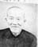
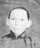

| 146,105,58,23 德 |


進德 Dïn Āk Jìndé |
||||||
|---|---|---|---|---|---|---|---|
| 147,106,59,24 業 |
珠業 Jî Ngèp Zhūyè |
環業 名其寬 Vãn Ngèp [Kǐ Fön] Huańyè [Qíkuān] |
玲業 名其新 Lẽin Ngèp [Kǐ Xïn] Língyè [Qíxīn] Above link removed |
班業 名其添 Bän Ngèp [Kǐ Hëm] Bānyè [Qítiān] |
玖業 名其法 [Kǐ Fāt] Jiǔyè [Qífǎ] |
環業妹 sister |
|
| 148,107,60,25 光 |
暢群 (入繼) Chēng Kǔn Chàngqún |
秋芹 Tiü Kĩn Qiūqín |
|||||
秋芹 Tiü Kĩn Qiūqín lives/lived in 其法 Kǐ Fāt's house.